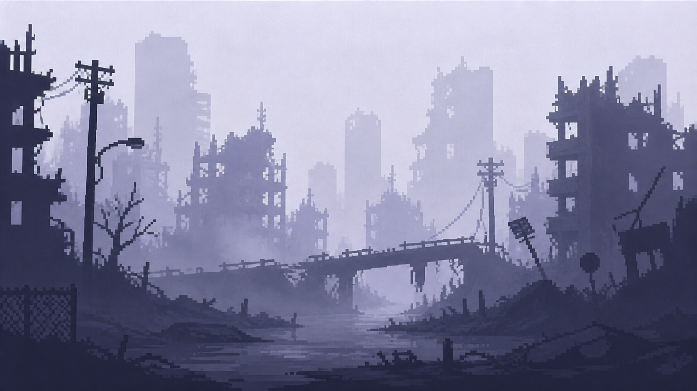
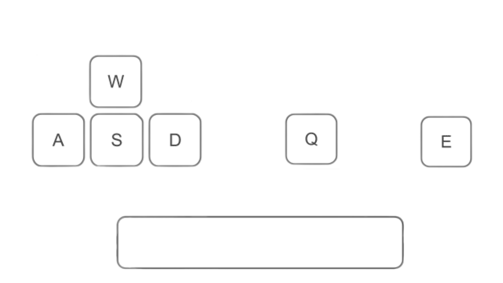

História
A história se passa em Lunares, uma cidade costeira afetada pela contaminação da água.

O jogador controla James, um médico que investiga o desaparecimento do avô e descobre uma conspiração envolvendo o governo.
Durante a jornada, ele precisa decidir entre salvar vidas ou expor toda a corrupção.
Mecânica do Jogo

Movimentação: W, A, S, D
Pular: Espaço
Atacar: Q
Subir escadas: E